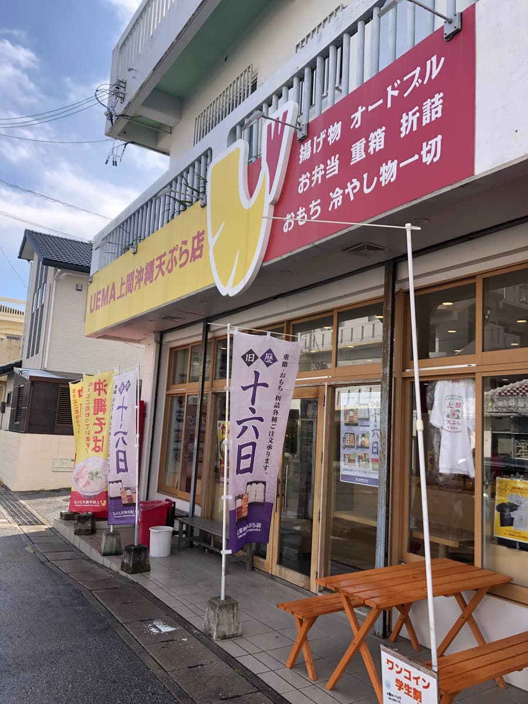
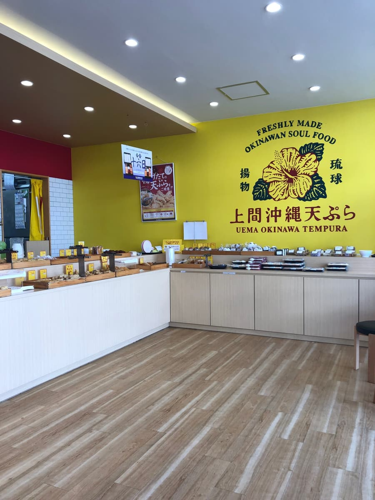
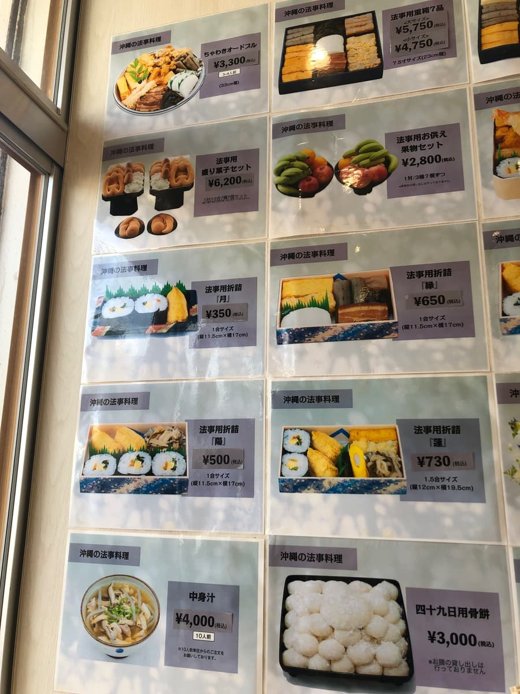
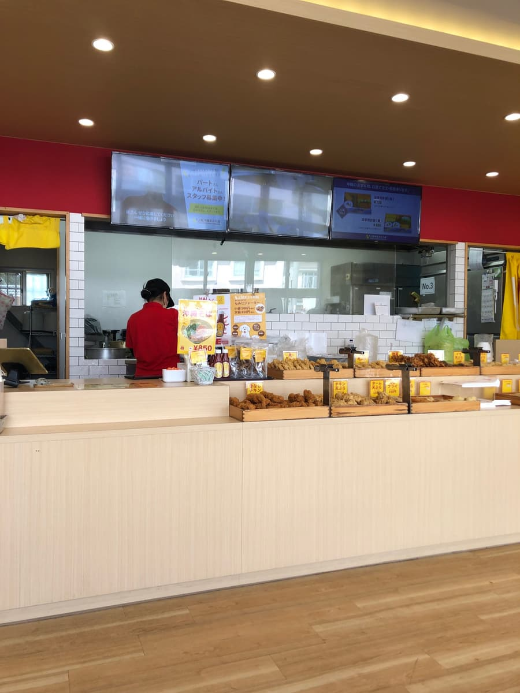
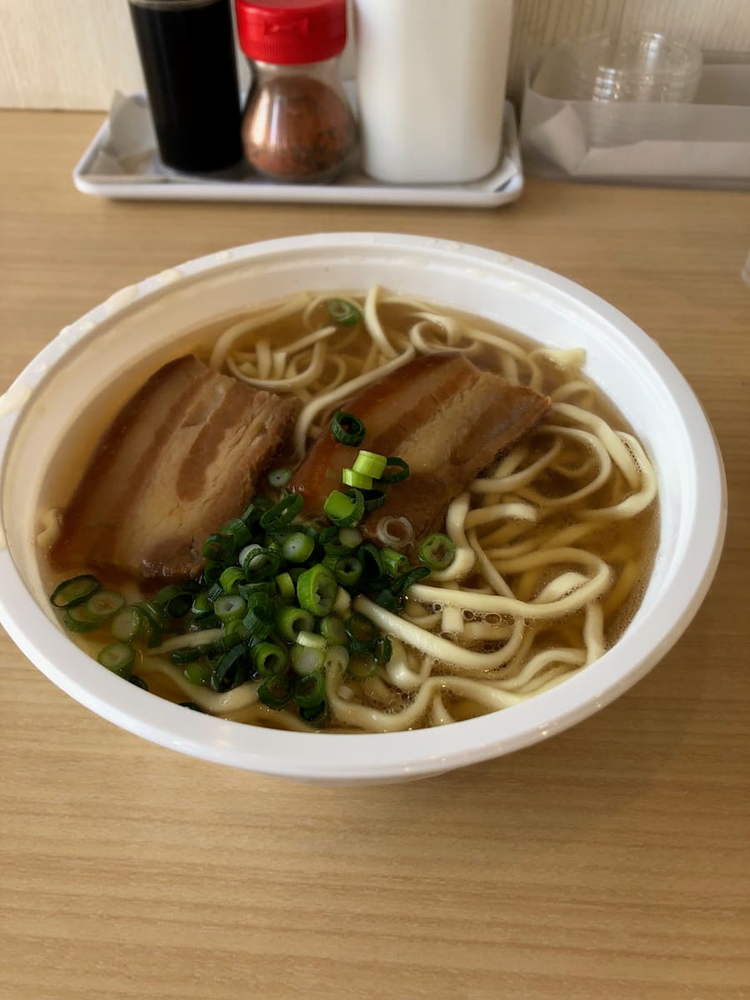
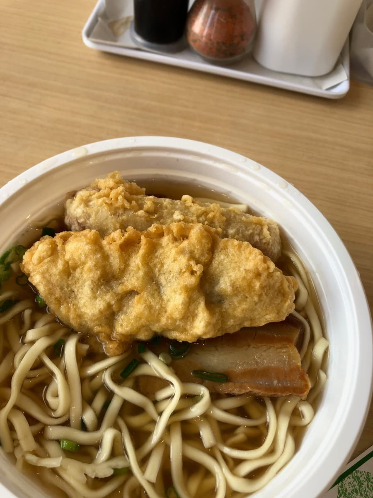
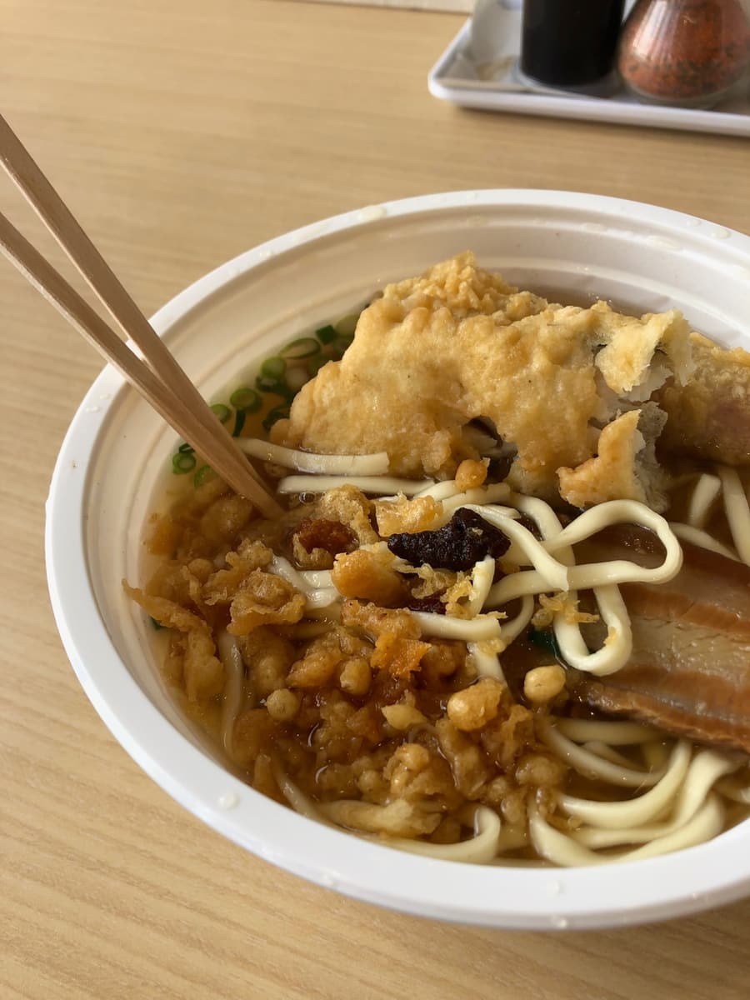
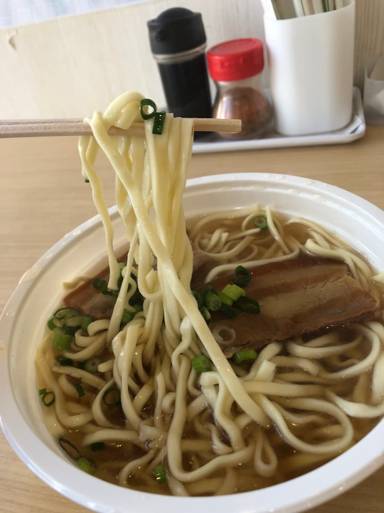

※這篇文章是用「Chat gpt 5.2（Thinking）」寫的，部分有我自己補充。2025.2去吃的😄
沖繩麵巡禮，這次去了沖繩市南桃原的「上間沖繩天婦羅店」〜😊 就像店名一樣，從外面就散發著“主打天婦羅”的氣息，還立著旗幟，目標超明顯。客人進進出出很多，還沒進去就感覺到「啊，這是深植在地的那種店」🍤




一進店，首先映入眼簾的是天婦羅的陳列。整排排得滿滿的，老實說心情都嗨起來了✨ 有魚天婦羅、熱狗天婦羅，還有蔬菜類，就像把沖繩的“天婦羅文化”直接搬上架一樣。明亮的店內也很乾淨，可以快速吃完快速離開的輕鬆感也很好。實際上客人也絡繹不絕，看到像是熟客的人熟門熟路地買走，就覺得這種店真的很強〜😌
這次點的是「三層肉麵」，加點魚天婦羅和熱狗天婦羅。與其說是沖繩麵店，“在天婦羅店也能吃麵”的感覺可能更貼切。上餐很快，接過來的瞬間就是「哦，湯汁好多耶」的那種。外觀份量感相當足，放到桌上的瞬間滿足感就先來了😂


湯頭是綜合高湯，有淡淡的豬骨味。雖然有濃郁感，但整體印象是鹹味稍微重一點。可能會因人而異，但流了很多汗的日子，或是想吃重口味的日子，應該會打中很多人👍


麵是中粗的平麵，帶有輕微捲曲。口感偏軟。個人真心話是，如果再多一點點彈性會更開心〜😅 不過，湯汁滿滿的湯頭會緊緊附著在麵上。喜歡軟麵的人應該可以放心愛上吧。
然後是天婦羅配料。魚天婦羅的麵衣很鬆軟，稍微泡一下湯，麵衣變得濕潤，又是另一種美味。熱狗天婦羅就是不用多說的垃圾食物感，有這種東西加進來，一下子就有了“上間的味道”呢😋 天婦羅碎屑也可以免費加，這點默默地很令人開心呢。
評分（9分/15分）：老實說，總評的結論是「嗯，普通呢」。雖然沒有超級感動！或獨一無二！那種特別突出的地方，但正因如此有著可以日常光顧的穩定感。客人多也很能理解，能連同天婦羅一起享受的“方便的強大”，我覺得是這家店的魅力😊 下次想攻略別的天婦羅，從天婦羅這邊玩玩看🍤✨
麵：★★★☆☆（3）
湯頭：★★★☆☆（3）
配料：★★★☆☆（3）